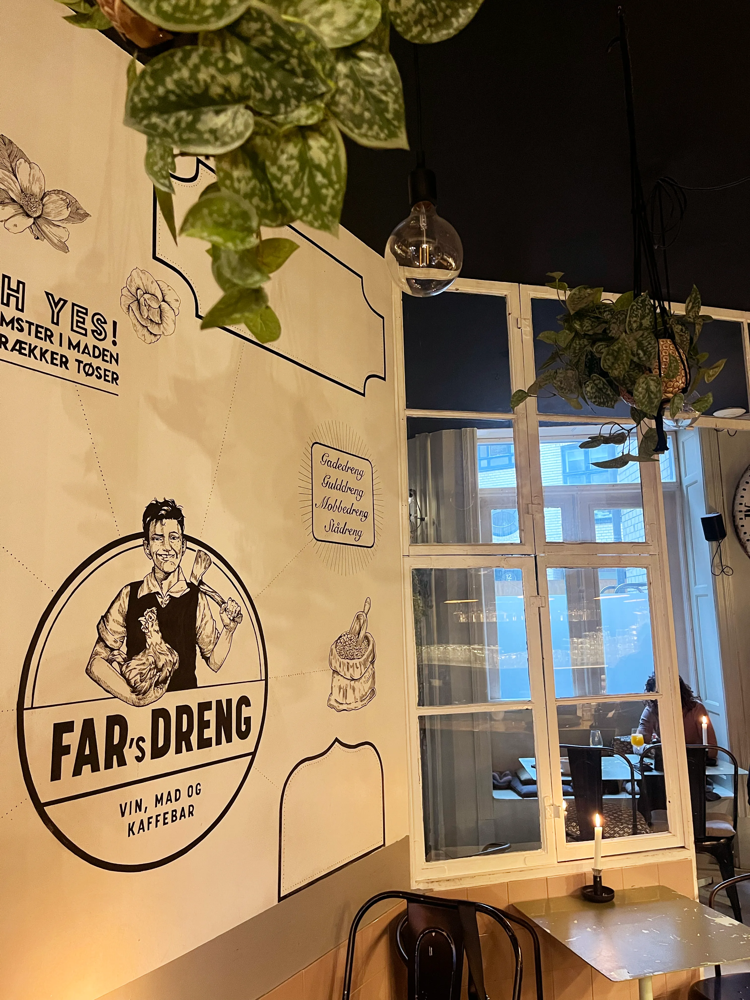
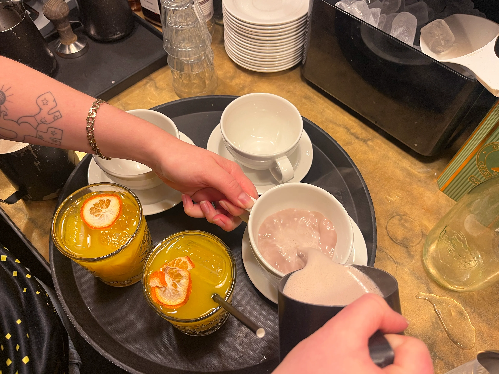
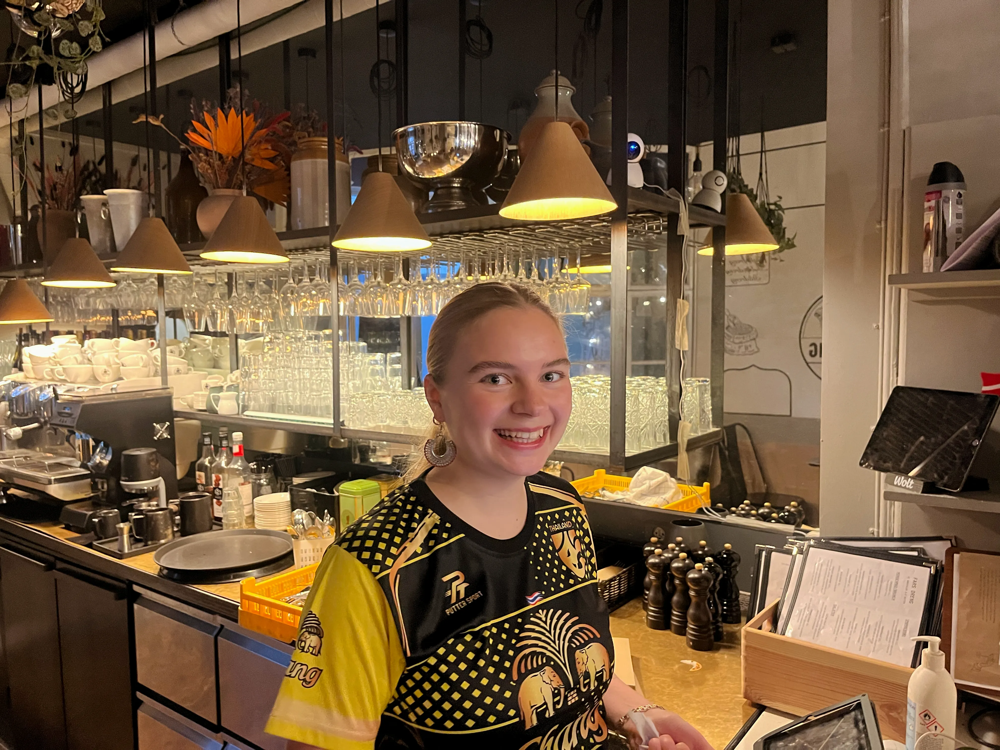
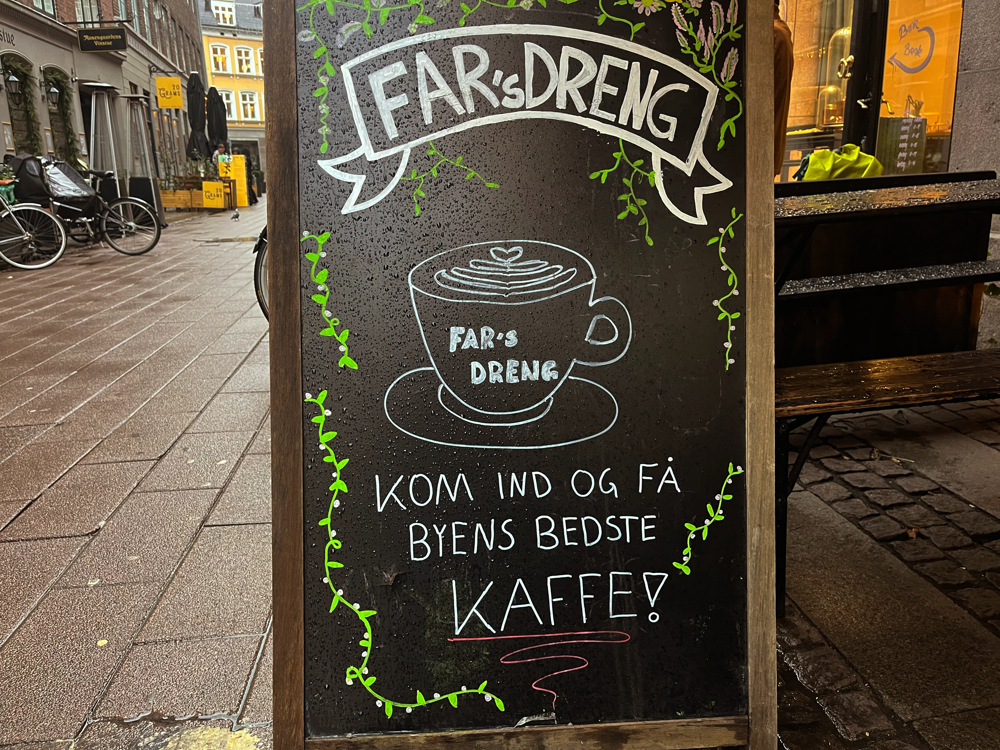

ET ARBEJDE MED PASSION
Frederikke Suhnsen, tjener og barista på "Fars Dreng"
Frederikke er en dedikeret og passioneret barista, som arbejder fuldtid på den hyggelige café Fars Dreng i hjertet af byen. Hun har arbejdet i cafébranchen i flere år og elsker at skabe en varm og indbydende atmosfære for alle gæster. For Frederikke er det ikke bare et arbejde – det er en livsstil. Hver dag stræber hun efter at give gæsterne en helt særlig oplevelse, hvad enten det er gennem en perfekt skummet cappuccino, et smil eller en hyggelig samtale.
Frederikke på caféen



